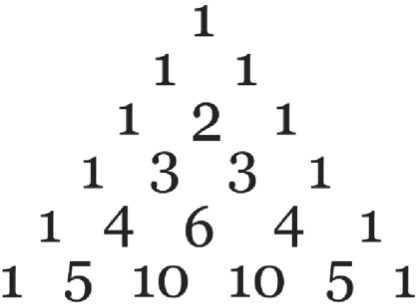

This notebook contains an excerpt from the Python Programming and Numerical Methods - A Guide for Engineers and Scientists, the content is also available at Berkeley Python Numerical Methods.
The copyright of the book belongs to Elsevier. We also have this interactive book online for a better learning experience. The code is released under the MIT license. If you find this content useful, please consider supporting the work on Elsevier or Amazon!
< 6.2 Divide and Conquer | Contents | 7.0 Objects and Classes >
Summary¶
A recursive function is a function that calls itself.
Recursive functions are useful when problems have a hierarchical structure rather than an iterative structure.
Divide and Conquer is a powerful problem-solving strategy that can be used to solve difficult problems.
Problems¶
Write a function my_sum(lst) where lst is a list, and the output is the sum of all the elements of lst. You can use recursion or iteration to solve the problem, but do not use Python’s function sum.
def my_sum(lst):
# Write your function code here
return out
# Output: 6
my_sum([1, 2, 3])
# Output: 5050
my_sum(range(1,101))
Chebyshev polynomials are defined recursively. Chebyshev polynomials are separated into two kinds: first and second. Chebyshev polynomials of the first kind, \(T_n(x)\), and of the second kind, \(U_n(x)\), are defined by the following recurrence relations:
Write a function my_chebyshev_poly1(n,x), where the output y is the n-th Chebyshev polynomial of the first kind evaluated at x. Be sure your function can take list inputs for x. You may assume that x is a list. The output variable, y, must be a list also.
def my_chebyshev_poly1(n,x):
# Write your function code here
return y
x = [1, 2, 3, 4, 5]
# Output: [1, 1, 1, 1, 1]
my_chebyshev_poly1(0,x)
# Output: [1, 2, 3, 4, 5]
my_chebyshev_poly1(1,x)
# Output: [1, 26, 99, 244, 485]
my_chebyshev_poly1(3,x)
The Ackermann function, A, is a quickly growing function that is defined by the recursive relationship:
Write a function my_ackermann(m,n), where the output is the Ackermann function compuated for m and n.
my_ackermann(4,4) is so large that it would be difficult to write down. Although the Ackermann function does not have many practical uses, the inverse Ackermann function has several uses in robotic motion planning.
def my_ackermann(m,n):
# write your own function code here
return out
# Output: 3
my_ackermann(1,1)
# Output: 4
my_ackermann(1,2)
# Output: 9
my_ackermann(2,3)
# Output: 61
my_ackermann(3,3)
# Output: 125
my_ackermann(3,4)
A function, C(n,k), which computes the number of different ways of uniquely choosing k objects from n without repetition, is commonly used in many statistics applications. For example, how many three-flavored ice cream sundaes are there if there are 10 icecream flavors? To solve this problem we would have to compute C(10,3), the number of ways of choosing three unique icecream flavors from 10. The function C is commonly called “n choose k.” You may assume that n and k are integers.
If n = k, then clearly C(n,k) = 1 because there is only way to choose n objects from n objects.
If k = 1, then C(n,k) = n because choosing each of the n objects is a way of choosing one object from n. For all other cases, C(n,k) = C(n-1,k) + C(n-1,k-1). Can you see why?
Write a function my_n_choose_k(n,k) that computes the number of times \(k\) objects can be uniquely chosen from \(n\) objects without repetition.
def my_n_choose_k(n,k):
# Write your own function code here
return out
# Output: 10
my_n_choose_k(10,1)
# Output: 1
my_n_choose_k(10,10)
# Output: 120
my_n_choose_k(10,3)
In purchases paid in cash, the seller must return money that was overpaid. This is commonly referred to as “giving change.” The bills and coins required to properly give change can be defined by a recursive relationship. If the amount paid is more than \\(100 more than the cost, then return a hundred-dollar bill along with the result of a recursive call to the change function with \\\)100 subtracted from the amount paid. If the amount paid is more than \\(50 over the cost of the item, then return a fifty-dollar bill, along with the result of a recursive call to the change function with \\\)50 subtracted. Similar clauses can be given for every denomination of US currency. The denominations of US currency, in dollars, is 100, 50, 20, 10, 5, 1, 0.25, 0.10, 0.05, and 0.01. For this problem we will ignore the two-dollar bill, which is not in common circulation. You may assume that cost and paid are scalars, and that paid >= cost. The output variable, change, must be a list as shown in the test case.
Use recursion to program a function my_change(cost, paid) where cost is the cost of the item, paid is the amount paid, and the output change is a list of bills and coins that should be returned to the seller. Note: Watch out for the base case!
def my_change(cost, paid):
# Write your own function code here
return change
# Output: [50.0, 20.0, 1.0, 1.0, 0.25, 0.10, 0.05, 0.01, 0.01, 0.01]
my_change(27.57, 100)
The golden ratio, \(\phi\), is the limit of \(\frac{F(n+1)}{F(n)}\) as n goes to infinity and F(n) is the n-th Fibonacci number, which can be shown to be exactly \(\frac{1 + \sqrt{5}}{2}\) and is approximately 1.62. We say that \(G(n) = \frac{F(n+1)}{F(n)}\) is the n-th approximation of the golden ratio, and \(G(1) = 1\).
It can be shown that \(\phi\) is also the limit of the continued fraction:
Write a recursive function with header my_golden_ratio(n), where the output is the n-th approximation of the golden ratio according to the continued fraction recursive relationship. You should use the continued fraction approximation for the Golden ratio, not the \(G(n) = F(n+1)/F(n)\) definition. However for both definitions, \(G(1) = 1\).
Studies have shown that rectangles with aspect ratio (i.e., length divided by width) close to the golden ratio are more pleasing than rectangles that do not. What is the aspect ratio of many wide-screen TV’s and movie screens?
def my_golden_ratio(n):
# Write your own function code here
return out
# Output: 1.618181818181818
my_golden_ratio(10)
import numpy as np
(1 + np.sqrt(5))/2
The greatest common divisor of two integers a and b is the largest integer that divides both numbers without remainder, and the function to compute it is denoted by gcd(a,b). The gcd function can be written recursively. If b equals 0, then a is the greatest common divisor. Otherwise, gcd(a,b) = gcd(b,a%b) where a%b is the remainder of a divided by b. Assume that a and b are integers.
Write a recursive function my_gcd(a,b) that computes the greatest common divisor of a and b. Assume that a and b are integers.
def my_gcd(a, b):
# Write your own function code here
return gcd
# Output: 2
my_gcd(10, 4)
# Output: 11
my_gcd(33, 121)
# Output: 1
my_gcd(18, 1)
Pascal’s triangle is an arrangement of numbers such that each row is equivalent to the coefficients of the binomial expansion of \((x + y)^{(p-1)}\), where p is some positive integer more than or equal to 1. For example, \((x+y)^2 = 1 x^2 + 2 xy + 1 y^2\) so the third row of Pascal’s triangle is 1 2 1.
Let \(R_{m}\) represent the m-th row of Pascal’s triangle, and \(R_m(n)\) be the \(n\)-th element of the row. By definition, \(R_m\) has m elements, and \(R_m(1) = R_m(n) = 1\). The remaining elements are computed by the following recursive relationship: \(R_m(i) = R_{m-1}(i-1) + R_{m-1}(i)\) for \(i = 2,\ldots,m-1\). The first few rows of Pascal’s triangle are depicted in the following figure. You may assume that m is a strictly positive integer. The output variable, row, must be a list.
{kind=link}
Write a function with my_pascal_row(m) where output variable row is the m-th row of the Pascal triangle. You may assume that m is a strictly positive integer.
def my_pascal_row(m):
# Write your own function code here
return row
# Output: [1]
my_pascal_row(1)
# Output: [1, 1]
my_pascal_row(2)
# Output: [1, 2, 1]
my_pascal_row(3)
# Output: [1, 3, 3, 1]
my_pascal_row(4)
# Output: [1, 4, 6, 4, 1]
my_pascal_row(5)
Consider a \(n\times{n}\) matrix of the following form:
where the ones form a right spiral. Write a function my_spiral_ones(n) that produces an \(n\times{n}\) matrix of the given form. Take care that the recursive steps are in the correct order (i.e., the ones go right, then down, then left, then up, then right, etc.).
def my_spiral_ones(n):
# Write your own function code here
return A
# Output: 1
my_spiral_ones(1)
# Output:
# array([[1, 1],
# [0, 1]])
my_spiral_ones(2)
# Output:
#array([[0, 1, 1],
# [0, 0, 1],
# [1, 1, 1]])
my_spiral_ones(3)
# Output:
#array([[1, 0, 0, 0],
# [1, 0, 1, 1],
# [1, 0, 0, 1],
# [1, 1, 1, 1]])
my_spiral_ones(4)
# Output:
#array([[1, 1, 1, 1, 1],
# [1, 0, 0, 0, 0],
# [1, 0, 1, 1, 0],
# [1, 0, 0, 1, 0],
# [1, 1, 1, 1, 0]])
my_spiral_ones(5)
Rewrite my_spiral_ones without using recursion.
Draw the recursion tree for my_towers(4).
Rewrite the Towers of Hanoi function in this chapter without using recursion.
Draw the recursion tree for my_quicksort([5 4 6 2 9 1 7 3]).
Rewrite the quicksort function in this chapter without using recursion.
< 6.2 Divide and Conquer | Contents | 7.0 Objects and Classes >